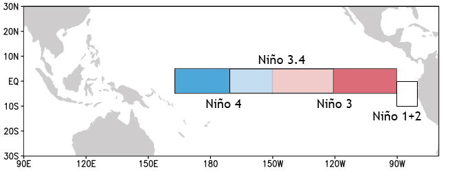
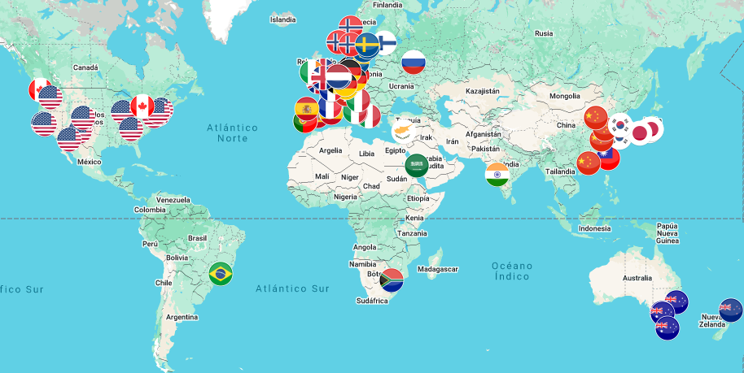
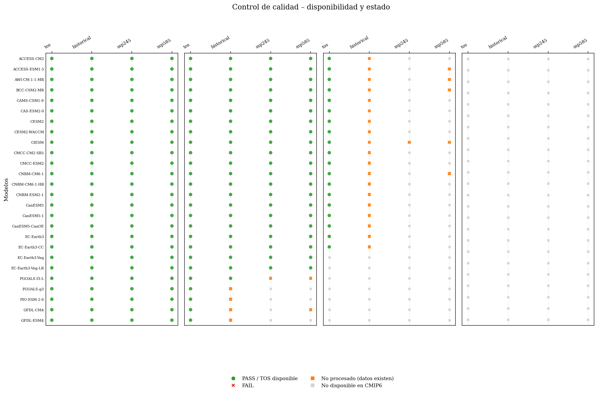
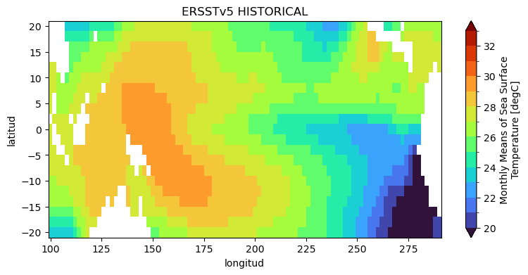
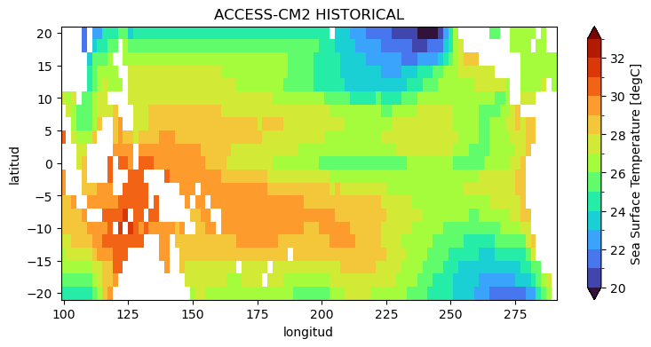
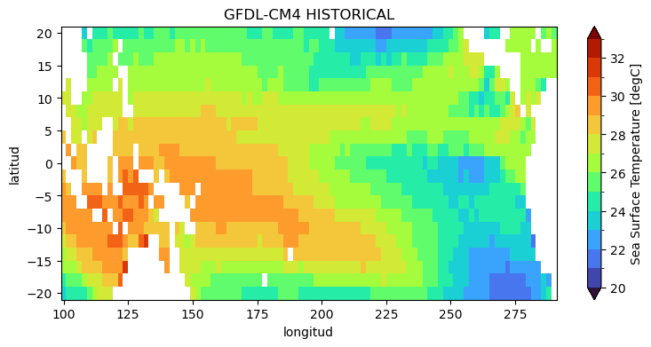
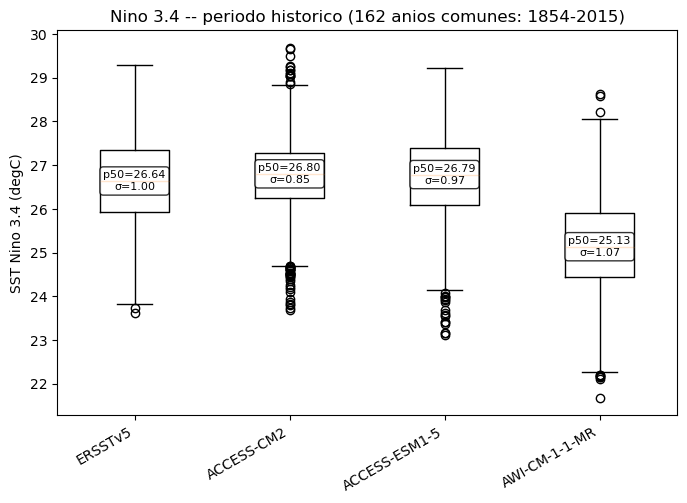

La historia de la descarga: qué se encontró en el camino
Resultados y gráficas
Próximos pasos
Marco del proyecto
Un servicio de 5 entregables
"Servicio de locación para evaluar la influencia del cambio climático en los eventos de El Niño y sus impactos en el Perú."
E1 · Base de datos
→
E2 · Evaluación histórica
→
E3 · Proyecciones e incertidumbre
E4 · Señal-ruido y TOE
→
E5 · Evaluación integrada
Pregunta principal del servicio: ¿en qué momento la señal de cambio climático en la TSM de Niño 3.4 / Niño 1+2 supera la variabilidad interna del sistema climático?
Marco del proyecto
Objetivo y actividades del Entregable 1
Establecer el marco conceptual, la metodología, los indicadores y la base de datos necesaria para evaluar la influencia del cambio climático sobre el ENSO.
Takahashi & Martínez (2019) — The very strong coastal El Niño in 1925 in the far-eastern Pacific
Climate Dynamics · IGP, Perú
El Niño costero: fenómeno regional distinto del ENSO canónico, con impactos directos en el litoral norte del Perú
La dinámica de la ITCZ y la asimetría norte-sur de TSM en el Pacífico oriental modulan su intensidad
Referencia clave para justificar por qué Niño 1+2 se analiza como región propia, separada de Niño 3.4
Revisión científica
Hawkins & Sutton — partición de incertidumbres y TOE
Hawkins & Sutton (2011) — The potential to narrow uncertainty in regional climate predictions
Climate Dynamics
Hawkins & Sutton (2012) — Time of emergence of climate signals
Geophysical Research Letters
Separan la incertidumbre total en tres fuentes: variabilidad interna, incertidumbre del modelo e incertidumbre del escenario
Definen el TOE como el momento en que la señal supera el ruido de variabilidad natural
Metodología base que este servicio adopta y sistematiza para Niño 3.4 / Niño 1+2 (Entregables 3 y 4)
Revisión científica
Szabó & Szépszó — aplicación regional
Szabó & Szépszó (2014) — Quantifying Sources of Uncertainty in Temperature and Precipitation Projections over Different Parts of Europe
Capítulo de libro
Aplica la partición de incertidumbre de Hawkins & Sutton a temperatura y precipitación, con modelos CMIP3, sobre distintas regiones de Europa
Ejemplo directo de cómo adaptar la metodología a una región específica — el mismo ejercicio que este servicio hace para el Pacífico tropical
Revisión científica
Bruno Ramírez — selección de modelos para Sudamérica
Bruno Ramírez (2023) — Análisis de fuentes de incertidumbre en los modelos climáticos CMIP6 para las proyecciones climáticas de temperatura y precipitación en Sudamérica
Trabajo de suficiencia profesional, Ing. Meteorología — Universidad Nacional Agraria La Molina
Evalúa el desempeño de modelos CMIP6 específicamente para Sudamérica
Insumo directo para consolidar el conjunto de modelos de este entregable: se prioriza el desempeño regional ya documentado, no solo la disponibilidad de datos
Revisión científica
Álvarez Sánchez — TSM del Pacífico tropical
Álvarez Sánchez (2024) — Proyecciones climáticas de temperatura superficial del mar y nivel del mar en las costas de Sudamérica y océano Pacífico tropical usando modelos del CMIP5
Trabajo de suficiencia profesional, Ing. Meteorología — Universidad Nacional Agraria La Molina
Antecedente directo en TSM del Pacífico tropical y costas de Sudamérica, con la generación anterior de modelos (CMIP5)
Este servicio extiende ese enfoque a CMIP6 y a la metodología de TOE
Revisión científica
Otras metodologías del TOE
Giorgi & Bi (2009) — TOE de "hot-spots" de cambio en precipitación forzados por gases de efecto invernadero, con el ensamble CMIP3
Barrow & Sauchyn (2019) — incertidumbre en proyecciones climáticas y TOE en las praderas canadienses
University of Washington (2014) — TOE de señales de cambio climático en la cuenca de Puget Sound
Todas coinciden en el marco de Hawkins & Sutton, aplicado a distintas regiones y variables — confirma que es la metodología estándar a adoptar en los Entregables 3 y 4.
Contexto conceptual
¿Qué es el Time of Emergence (TOE)?
El momento en el tiempo en que la señal climática forzada (el cambio de tendencia) se vuelve distinguible del ruido de la variabilidad natural del sistema.
No basta con mirar la tendencia: hay que compararla contra cuánto varía el clima "por sí solo"
Para eso se necesita un conjunto amplio de modelos climáticos (para estimar el ruido) y un dato observado de referencia
Este entregable construye la base de datos sobre la que se calculará el TOE en entregables posteriores
Niño 1+2 — 0°–10°S, 90°O–80°O Formato 0-360: lon 270–280 — costa oeste de Sudamérica

Cajas Niño 1+2, Niño 3, Niño 3.4 y Niño 4 sobre el Pacífico tropical
Contexto conceptual
Periodos de referencia
Periodo
Rango
Uso
Referencia histórica / validación
1981 – 2014
Línea base observada y de referencia entre fuentes
Proyección P1
2036 – 2065
Horizonte de mediano plazo
Proyección P2
2071 – 2100
Horizonte de largo plazo
Escenarios de emisión: ssp245 y ssp585. Rango completo de descarga: 1850–2100 (todo el histórico disponible, no solo la ventana de referencia).
Contexto conceptual
Fuentes de datos
CMIP6 (modelos)
Decenas de modelos climáticos, aporte de instituciones de todo el mundo
Variable tos (SST), tabla Omon
Vía ESGF, y como respaldo Copernicus CDS
ERSSTv5 (observado) — NOAA PSL, ~2° de resolución, define la grilla y máscara objetivo

Instituciones y países que contribuyen modelos al ensamble CMIP6
Arquitectura
Un solo orquestador: run.sh
./run.sh [STEP_FROM] [STEP_TO] [MAX_MODELS]
Sin argumentos: corre todos los pasos, de punta a punta
Con rango: por ejemplo ./run.sh 04 07 corre solo el procesamiento
Idempotente: cada paso revisa si su salida ya existe y la omite — se puede interrumpir y reanudar sin repetir trabajo ni perder tiempo
Arquitectura
Flujo del pipeline, paso a paso
00 Entorno
→
00b Modelos candidatos
→
00c Literatura (manual)
01 Catálogo ESGF
→
02 Descarga (cascada)
→
03 ERSSTv5
04 Grilla común
→
05 Máscara
→
06 Control calidad
→
07 Inventario final
Cada paso de este diagrama se explica en detalle más adelante.
Arquitectura
Estructura de carpetas del proyecto
e1_smn/
├── run.sh # orquestador único
├── environment.yml # entorno reproducible (paso 0)
├── scripts/ # un script por paso del pipeline
├── config/ # semillas, dominios, periodos (dentro del repo)
├── data/ # raw / interim / processed (ver próxima lámina)
├── logs/ # logs por paso + reportes de estado
├── figures/ # gráficos exploratorios (bajo demanda)
├── informe/ # entregables: esta presentación, reportes .md
└── graficos_exploratorios.ipynb
Todo el proyecto vive en un único repositorio autocontenido — un git clone trae también config/.
Arquitectura
Estructura de data/
data/raw/cmip6/<modelo>/<experimento>/<chunk>.nc # crudo, grilla nativa
data/raw/ersstv5/ # observado, crudo
data/interim/.weights/<modelo>.nc # pesos de regrilla (cache)
data/interim/processed/tos_<modelo>_<exp>.nc # regrillado, sin máscara
data/interim/ocean_mask.nc # máscara 1 = océano
data/processed/masked/tos_<modelo>_<exp>.nc # dato final, listo para TOE
data/processed/qc_report.csv # control de calidad
data/processed/models_inventory_final.csv # inventario final
Todo lo pesado (data/raw, data/interim, data/processed/masked) queda fuera del repositorio de código — solo se versionan scripts, configuración y reportes.
Arquitectura
Principio de idempotencia
Cada paso, antes de trabajar, se pregunta: "¿ya existe mi salida?"
Si existe → la omite y sigue al siguiente modelo/experimento
Si no existe → la genera
Consecuencia práctica: se puede cortar el proceso a la mitad (por ejemplo, una descarga larga) y volver a correr run.sh sin duplicar nada ni perder lo ya avanzado
Arquitectura
Convenciones clave del proyecto
Un solo miembro de ensamble (variant_label, ej. r1i1p1f1) por modelo, el mismo en los 3 experimentos — evita mezclar realizaciones distintas como si fueran una sola serie
Longitudes en formato 0-360 en todo el pipeline (descarga, cajas de análisis, regrillado)
Malla no estructurada (ej. mallas oceánicas tipo FESOM): se detecta automáticamente y se usa un método de regrillado distinto (conservativo en vez de bilineal)
Arquitectura
¿Cómo se seleccionaron los modelos?
Paso 00b: revisión de todo el vocabulario CMIP6, filtrando por disponibilidad de los 3 experimentos
Paso 00c: se contrasta contra los modelos citados en la bibliografía del proyecto (incluida la tesis de Bruno Ramírez, con desempeño ya evaluado para Sudamérica)
Resultado: un universo de 102 modelos candidatos, más amplio que cualquiera de las dos fuentes por separado
Paso 0 — antes de todo
El entorno reproducible: environment.yml
El primer paso en cualquier máquina Linux nueva, antes de tocar run.sh.
Un solo archivo con todo lo necesario: Python, CDO, y las librerías de cada script
Reproducible con conda — misma versión de herramientas en cualquier equipo
Remapeo de cada chunk crudo a la grilla de ERSSTv5
Fusión temporal de los chunks ya regrillados
Recorte de años según el experimento
Homogeneización de calendario y unidades
Los pasos del pipeline
04Pesos de regrilla, con verificación
Un solo cálculo de pesos por modelo (reutilizado en los 3 experimentos) — rápido
Respaldo automático: si el regrillado falla con esos pesos compartidos, se recalculan pesos propios para ese periodo puntual
Esto permitió confirmar, con evidencia directa, que en algunos modelos la malla nativa sí cambia entre historical y los escenarios futuros
Los pasos del pipeline
04Primer filtro: selvar,tos
Algunos modelos publican variables auxiliares (ej. área de celda) sin declarar a qué malla pertenecen
Eso hacía abortar el cálculo de regrillado por "coordenadas genéricas no soportadas"
Fix: quedarse solo con la variable tos (y sus coordenadas reales) como primer paso, antes de calcular pesos o regrillar
Los pasos del pipeline
05Máscara océano-tierra
scripts/05_apply_ocean_mask.py
La máscara se construye a partir del propio dato observado (ERSSTv5), no de cada modelo por separado
Un punto es océano si tiene al menos un mes válido en todo el registro observado
Se aplica por igual a todos los modelos — garantiza que todas las fuentes compartan exactamente la misma huella válida/faltante
Los pasos del pipeline
06Control de calidad
scripts/06_qc_checks.py — el filtro de aceptación del pipeline
Rango físico de la SST (−2 a 39 °C)
Cobertura temporal esperada por experimento (con tolerancia)
Clasifica cada combinación modelo-experimento como PASS o FAIL
Los pasos del pipeline
07Inventario final
scripts/07_build_inventory_report.py
Combina el resultado del control de calidad con la resolución real de cada modelo
Produce la tabla resumen de los modelos finalmente seleccionados para el análisis de TOE
Es el producto de cierre de este entregable
Novedades operativas
Reporte de estado automático
Cada corrida de run.sh (sin importar el rango de pasos) escribe un reporte en logs/
Incluye: modelos ya descargados, con descarga parcial, procesados, descargados-pero-sin-procesar, y pendientes vía fuentes alternativas
Permite saber el estado del pipeline sin tener que revisar carpeta por carpeta
Novedades operativas
Guardia contra descargas duplicadas
run.sh detecta si ya hay una descarga corriendo en otro proceso
Si es así, no lanza una segunda — evita competencia por ancho de banda y archivos a medio escribir
Se puede correr run.sh con confianza mientras una descarga anterior sigue en curso
Cómo usarlo
Ejemplos de comandos
# Corrida completa, de punta a punta
./run.sh
# Solo el procesamiento (datos ya descargados)
./run.sh 04 07
# Restringir el procesamiento a un modelo puntual
MODELS="ACCESS-CM2" bash scripts/04_process_to_common_grid.sh
# Limitar cuántos modelos nuevos se descargan
./run.sh 02 02 5
La historia de la descarga
Línea de tiempo del trabajo
1
Arranque del pipeline
2
Primera corrida completa
3
Identificando huecos
4
Nodo caído + bugs de proceso
5
Automatización y cierre
Cinco días de trabajo efectivo, en la semana de arranque del proyecto.
Día 1
Arranque del pipeline
Desarrollo del orquestador run.sh y los scripts de cada paso
Primeras corridas de prueba, ajustando el orden de operaciones
Se corrige un bug temprano: sin fijar un único miembro de ensamble, ESGF entrega varias realizaciones que se fusionaban como si fueran una sola serie continua
Día 2
Primera corrida completa
Descarga vía ESGF (nodo principal): la gran mayoría de los modelos completos en el primer intento
Primer intento con Copernicus CDS — bloqueado inicialmente por una licencia sin aceptar; resuelto, y se logra el primer modelo completo por esa vía
Día 3
Identificando los huecos
Comparación fina entre el catálogo de archivos esperados y lo que realmente había en disco
Resultado: 298 archivos faltantes, concentrados en 5 modelos de la familia EC-Earth3 y TaiESM1
Segundo lote de Copernicus CDS (14 modelos con disponibilidad verificada a mano): resultados mixtos, varios fallan por no estar replicados en ese servicio
Día 4
Un nodo completamente caído
Se descubre que un único nodo (compartido por la mayoría de los 298 archivos faltantes) no respondía — no un error puntual, sino timeout de conexión total
Se consultan en vivo 6 nodos adicionales de la federación ESGF, agregando más de 10 800 URLs de mirrors alternativos al catálogo
Resultado del reintento dirigido: 286 de 289 archivos recuperados
Día 4
Bugs de procesamiento, no de descarga
Malla curvilínea sin coordenadas
Un modelo publica una variable auxiliar (área de celda) sin declarar su malla — el regrillado abortaba al toparse con ella.
Malla que cambia entre experimentos
Otro modelo cambia su malla nativa entre el histórico y los escenarios futuros — los pesos de regrilla calculados una sola vez ya no aplicaban.
Ambos casos, ya corregidos (ver paso 04, láminas anteriores).
Día 5
Automatización y cierre
Se automatiza la cascada completa de descarga (02a → 02b → 02c) dentro de run.sh, y se agregan el reporte de estado y la guardia contra descargas duplicadas
A partir de evidencia adicional, se revisan y corrigen dos modelos puntuales que aún no estaban completos — el catálogo se ajusta para poder mejorar automáticamente cualquier modelo incompleto en corridas futuras, sin perder nunca lo ya resuelto
Con esto se cierra el ciclo de adquisición de datos de este entregable
Resumen de la descarga
Vía regular vs. mirror alternativo
39
modelos por la vía regular (primer mirror, sin intervención)
8
requirieron mirror alternativo dentro de ESGF
1
requirió un miembro de ensamble distinto
Los 8 con mirror alternativo: familia EC-Earth3 (4), TaiESM1, CIESM y otros dos modelos puntuales.
Resumen de la descarga
Caminos que no aportaron modelos nuevos
Copernicus CDS: no espeja el catálogo completo de ESGF — la mayoría de los intentos fallan porque ese modelo/experimento simplemente no está replicado ahí (no es un error de nuestra solicitud)
Nodos ESGF alternativos para los modelos "no encontrados": 0 de 44 resueltos — se verificó, modelo por modelo, que ninguno tiene los 3 experimentos publicados bajo ningún miembro (varios son de otros proyectos de intercomparación, o de alta resolución, o solo corrieron el histórico)
Resultados
Estado final del universo de modelos
102
modelos candidatos en total
48
completos (3/3 experimentos)
47
seleccionados tras control de calidad
Resultados
Control de calidad, por modelo

141 de 142 combinaciones modelo-experimento pasan el control de calidad.
Resultados
El dato ya homogeneizado: ERSSTv5 vs. modelos

Observado (ERSSTv5)

Modelo 1: ACCESS-CM2

Modelo 2: GFDL-CM4
Mismo periodo histórico, misma grilla, misma máscara — ya comparables punto a punto.
Resultados
Vista previa: primera comparación exploratoria

Dispersión (σ) y mediana (p50) de ERSSTv5 vs. tres modelos, mismo periodo histórico común — Niño 3.4. Un anticipo de la evaluación de desempeño formal del Entregable 2, ya posible gracias a que el dato quedó homogeneizado.
Resultados
Un caso pendiente
Un modelo (de los 48 completos) no pasa el control de calidad: un artefacto de regrillado en la línea de costa, en un punto que el observado considera océano
Queda identificado y documentado para revisión manual antes del Entregable 2
El resto del inventario (47 modelos) queda validado y listo para usarse
Próximos pasos
Hacia el Entregable 2
Evaluación histórica del estado medio: climatología, mapas de sesgo, RMSE y diagrama de Taylor respecto a ERSSTv5
Evaluación de la variabilidad del ENSO: anomalías, índices (C, E, ONI, RONI, ICEN), comparación de distribuciones
Evaluación de eventos extremos: identificación de eventos El Niño moderados y extremos, por percentiles
Revisión manual pendiente: el modelo con artefacto de regrillado costero (lámina anterior)
Gracias
Entregable 1 — Pipeline de datos SST (CMIP6 + ERSSTv5)
Jonathan Paredes Ingeniero Meteorólogo
Subdirección de Modelamiento Numérico de la Atmósfera — SMN — SENAMHI